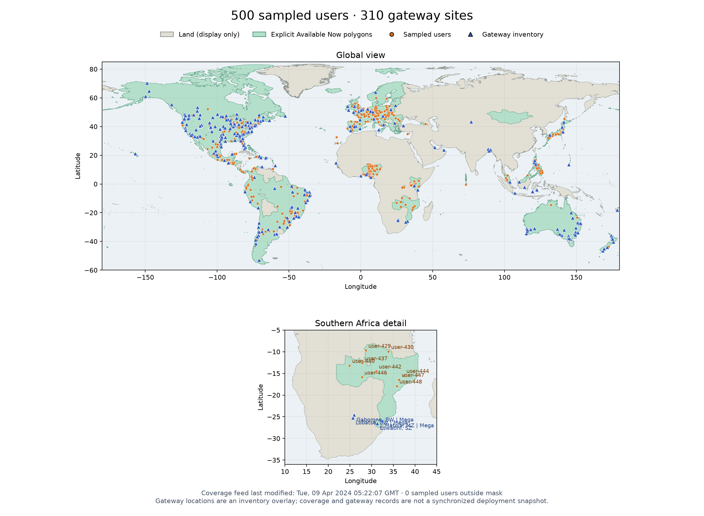

LEO coverage and topology audit
500 shared population-weighted sampled users · 310 admitted gateway sites · selectable constellation and shell models.
Full Starlink catalog and shell selections
11,156 objects from the complete CelesTrak Starlink GP catalog, including all inclinations and unmatched objects. Use the viewer's Topology / shell selector for inclination families and altitude/inclination bands, with proximity or plus-grid ISL models.
These are GP-derived positions, not additional OCM data. Catalog membership does not establish operational status. Bands are explicit display bins (0.2° inclination, 5 km mean altitude), not official shell assignments. All catalog objects remain in the full-fleet view. The generated ISLs assume up to four terminals, with 1,500 km maximum range and Earth-clearance at exported sample times. Cross-band ISLs are disabled by default. Disconnected or uncovered selections remain visible; users are not filtered to improve reachability.
Catalog date, epoch, hashes and grouping parameters. Additional shell data loads only when selected. Earlier Hypatia and OCM experiments below remain available as separate references.
Coverage, users & gateways ↗
Hypatia toroidal plus-grid
Idealized 550 km constellation with four ISLs per satellite. This is a reference model, not measured Starlink connectivity.
OCM inferred ISLs
2,549 satellites · 3,778 inferred version-budget ISLs.
What this represents
Coverage comes from Starlink’s explicit Available Now residential polygons, last modified April 9, 2024. Sampling uses those polygons independently of country boundaries. These are synthetic population-weighted locations using GHSL 2020, not actual subscribers.
Gateways come from a community Google My Maps inventory. Built or live records are admitted under a documented assumption; six coordinates are approximate or uncertain. Records are retained at their source coordinates. Every model retains all 310 sites, including gateways with zero satellite attachments. Fixed registration uses the closest source gateway even when it has no usable link; unreachable users remain counted.
Satellite positions come from an October 14, 2026 OCM snapshot. ISLs are inferred using version-dependent terminal budgets and adjacent planes; they are not an observed operational network. These datasets have different dates.
Fixed registration assigns the geographically closest source gateway and keeps it across both snapshots. Unattached destinations remain unreachable rather than being replaced by another gateway. Anycast selects the minimum-hop reachable gateway. Radius counts ISLs plus the satellite-to-gateway downlink, excluding user access and virtual outlet cost. The viewer reports reachability and cutoffs from each model's data; no finite cutoff can reach an unattached destination. The legacy reference models have different gateway attachment settings (Hypatia: 25° and up to 8 satellites; OCM: 10° and up to 32), so their results are not a controlled topology comparison.
Use the Gateway mapping selector to compare fixed closest-distance registration with minimum-hop anycast in either topology. The destination gateway, highlighted route, and propagation-radius reachability update together, with both all-user cutoffs shown for comparison. Anycast assumes all admitted gateways can advertise the same destination; actual PoP eligibility is unknown. Direct links also accept mapping=closest or mapping=anycast.
Switch between 3D, geographic, logical grid, and orbital views, inspect routes, and adjust the cutoff. Map outlines are Natural Earth land only, used for display, with no country boundary layer.

Processed data
Frozen CSV/GeoJSON inputs, results, uncertainty and provenance audits. SHA-256 download manifest. Visualizations are self-contained and need no external API or map tiles.
- users.csv (21,377 bytes)
- users.metadata.json (1,846 bytes)
- coverage.audit.json (712 bytes)
- coastline.audit.json (1,567 bytes)
- snapshot.json (1,063,455 bytes)
- report.json (853,933 bytes)
- registrations.csv (72,182 bytes)
- anycast_sensitivity.json (1,149,705 bytes)
- gateway_research_audit.json (2,378 bytes)
- topology.audit.json (927 bytes)
- plus-grid/snapshot.json (425,278 bytes)
- plus-grid/report.json (853,986 bytes)
- plus-grid/registrations.csv (72,182 bytes)
- plus-grid/topology.audit.json (814 bytes)
- plus-grid/topology.data.json (5,365,330 bytes)
- ocm/topology.data.json (6,780,641 bytes)
- plus-grid/satellites.csv (344,014 bytes)
- plus-grid/isls.csv (33,605 bytes)
- fleet/gp-all-proximity.json.gz (2,229,722 bytes)
- fleet/gp-all-proximity.audit.json (947 bytes)
- fleet/gp-all-proximity.definition.json (1,679 bytes)
- fleet/gp-all-proximity.satellites.csv (1,730,202 bytes)
- fleet/gp-all-proximity.isls.csv (258,144 bytes)
- fleet/gp-all-plus-grid.json.gz (2,164,837 bytes)
- fleet/gp-all-plus-grid.audit.json (950 bytes)
- fleet/gp-all-plus-grid.definition.json (1,678 bytes)
- fleet/gp-all-plus-grid.satellites.csv (1,730,202 bytes)
- fleet/gp-all-plus-grid.isls.csv (117,660 bytes)
- fleet/gp-inc-43-proximity.json.gz (1,032,538 bytes)
- fleet/gp-inc-43-proximity.audit.json (946 bytes)
- fleet/gp-inc-43-proximity.definition.json (1,733 bytes)
- fleet/gp-inc-43-proximity.satellites.csv (559,682 bytes)
- fleet/gp-inc-43-proximity.isls.csv (93,829 bytes)
- fleet/gp-inc-43-plus-grid.json.gz (1,013,714 bytes)
- fleet/gp-inc-43-plus-grid.audit.json (947 bytes)
- fleet/gp-inc-43-plus-grid.definition.json (1,733 bytes)
- fleet/gp-inc-43-plus-grid.satellites.csv (559,682 bytes)
- fleet/gp-inc-43-plus-grid.isls.csv (41,035 bytes)
- fleet/gp-inc-53-proximity.json.gz (1,265,527 bytes)
- fleet/gp-inc-53-proximity.audit.json (949 bytes)
- fleet/gp-inc-53-proximity.definition.json (1,733 bytes)
- fleet/gp-inc-53-proximity.satellites.csv (785,296 bytes)
- fleet/gp-inc-53-proximity.isls.csv (114,800 bytes)
- fleet/gp-inc-53-plus-grid.json.gz (1,240,626 bytes)
- fleet/gp-inc-53-plus-grid.audit.json (954 bytes)
- fleet/gp-inc-53-plus-grid.definition.json (1,733 bytes)
- fleet/gp-inc-53-plus-grid.satellites.csv (785,296 bytes)
- fleet/gp-inc-53-plus-grid.isls.csv (61,212 bytes)
- fleet/gp-inc-70-proximity.json.gz (574,428 bytes)
- fleet/gp-inc-70-proximity.audit.json (942 bytes)
- fleet/gp-inc-70-proximity.definition.json (1,731 bytes)
- fleet/gp-inc-70-proximity.satellites.csv (146,233 bytes)
- fleet/gp-inc-70-proximity.isls.csv (11,722 bytes)
- fleet/gp-inc-70-plus-grid.json.gz (572,214 bytes)
- fleet/gp-inc-70-plus-grid.audit.json (908 bytes)
- fleet/gp-inc-70-plus-grid.definition.json (1,731 bytes)
- fleet/gp-inc-70-plus-grid.satellites.csv (146,233 bytes)
- fleet/gp-inc-70-plus-grid.isls.csv (4,702 bytes)
- fleet/gp-inc-97-proximity.json.gz (665,671 bytes)
- fleet/gp-inc-97-proximity.audit.json (941 bytes)
- fleet/gp-inc-97-proximity.definition.json (1,733 bytes)
- fleet/gp-inc-97-proximity.satellites.csv (232,948 bytes)
- fleet/gp-inc-97-proximity.isls.csv (37,880 bytes)
- fleet/gp-inc-97-plus-grid.json.gz (655,987 bytes)
- fleet/gp-inc-97-plus-grid.audit.json (882 bytes)
- fleet/gp-inc-97-plus-grid.definition.json (1,732 bytes)
- fleet/gp-inc-97-plus-grid.satellites.csv (232,948 bytes)
- fleet/gp-inc-97-plus-grid.isls.csv (10,798 bytes)
- fleet/gp-band-215-70-proximity.json.gz (438,411 bytes)
- fleet/gp-band-215-70-proximity.audit.json (944 bytes)
- fleet/gp-band-215-70-proximity.definition.json (1,829 bytes)
- fleet/gp-band-215-70-proximity.satellites.csv (27,735 bytes)
- fleet/gp-band-215-70-proximity.isls.csv (2,283 bytes)
- fleet/gp-band-215-70-plus-grid.json.gz (437,807 bytes)
- fleet/gp-band-215-70-plus-grid.audit.json (880 bytes)
- fleet/gp-band-215-70-plus-grid.definition.json (1,828 bytes)
- fleet/gp-band-215-70-plus-grid.satellites.csv (27,735 bytes)
- fleet/gp-band-215-70-plus-grid.isls.csv (323 bytes)
- fleet/gp-band-215-71-proximity.json.gz (435,792 bytes)
- fleet/gp-band-215-71-proximity.audit.json (941 bytes)
- fleet/gp-band-215-71-proximity.definition.json (1,829 bytes)
- fleet/gp-band-215-71-proximity.satellites.csv (25,203 bytes)
- fleet/gp-band-215-71-proximity.isls.csv (1,863 bytes)
- fleet/gp-band-215-71-plus-grid.json.gz (434,988 bytes)
- fleet/gp-band-215-71-plus-grid.audit.json (850 bytes)
- fleet/gp-band-215-71-plus-grid.definition.json (1,827 bytes)
- fleet/gp-band-215-71-plus-grid.satellites.csv (25,203 bytes)
- fleet/gp-band-215-71-plus-grid.isls.csv (141 bytes)
- fleet/gp-band-215-96-proximity.json.gz (973,252 bytes)
- fleet/gp-band-215-96-proximity.audit.json (888 bytes)
- fleet/gp-band-215-96-proximity.definition.json (1,831 bytes)
- fleet/gp-band-215-96-proximity.satellites.csv (495,109 bytes)
- fleet/gp-band-215-96-proximity.isls.csv (89,741 bytes)
- fleet/gp-band-215-96-plus-grid.json.gz (955,874 bytes)
- fleet/gp-band-215-96-plus-grid.audit.json (957 bytes)
- fleet/gp-band-215-96-plus-grid.definition.json (1,831 bytes)
- fleet/gp-band-215-96-plus-grid.satellites.csv (495,109 bytes)
- fleet/gp-band-215-96-plus-grid.isls.csv (40,629 bytes)
- fleet/gp-band-266-71-proximity.json.gz (465,119 bytes)
- fleet/gp-band-266-71-proximity.audit.json (946 bytes)
- fleet/gp-band-266-71-proximity.definition.json (1,843 bytes)
- fleet/gp-band-266-71-proximity.satellites.csv (49,742 bytes)
- fleet/gp-band-266-71-proximity.isls.csv (4,257 bytes)
- fleet/gp-band-266-71-plus-grid.json.gz (463,353 bytes)
- fleet/gp-band-266-71-plus-grid.audit.json (881 bytes)
- fleet/gp-band-266-71-plus-grid.definition.json (1,842 bytes)
- fleet/gp-band-266-71-plus-grid.satellites.csv (49,742 bytes)
- fleet/gp-band-266-71-plus-grid.isls.csv (309 bytes)
- fleet/gp-band-266-91-proximity.json.gz (443,876 bytes)
- fleet/gp-band-266-91-proximity.audit.json (942 bytes)
- fleet/gp-band-266-91-proximity.definition.json (1,843 bytes)
- fleet/gp-band-266-91-proximity.satellites.csv (30,104 bytes)
- fleet/gp-band-266-91-proximity.isls.csv (2,997 bytes)
- fleet/gp-band-266-91-plus-grid.json.gz (442,789 bytes)
- fleet/gp-band-266-91-plus-grid.audit.json (879 bytes)
- fleet/gp-band-266-91-plus-grid.definition.json (1,842 bytes)
- fleet/gp-band-266-91-plus-grid.satellites.csv (30,104 bytes)
- fleet/gp-band-266-91-plus-grid.isls.csv (519 bytes)
- fleet/gp-band-266-92-proximity.json.gz (991,519 bytes)
- fleet/gp-band-266-92-proximity.audit.json (879 bytes)
- fleet/gp-band-266-92-proximity.definition.json (1,845 bytes)
- fleet/gp-band-266-92-proximity.satellites.csv (508,636 bytes)
- fleet/gp-band-266-92-proximity.isls.csv (92,343 bytes)
- fleet/gp-band-266-92-plus-grid.json.gz (977,557 bytes)
- fleet/gp-band-266-92-plus-grid.audit.json (954 bytes)
- fleet/gp-band-266-92-plus-grid.definition.json (1,845 bytes)
- fleet/gp-band-266-92-plus-grid.satellites.csv (508,636 bytes)
- fleet/gp-band-266-92-plus-grid.isls.csv (57,880 bytes)
- fleet/gp-band-266-94-proximity.json.gz (522,017 bytes)
- fleet/gp-band-266-94-proximity.audit.json (942 bytes)
- fleet/gp-band-266-94-proximity.definition.json (1,843 bytes)
- fleet/gp-band-266-94-proximity.satellites.csv (89,438 bytes)
- fleet/gp-band-266-94-proximity.isls.csv (13,371 bytes)
- fleet/gp-band-266-94-plus-grid.json.gz (516,938 bytes)
- fleet/gp-band-266-94-plus-grid.audit.json (886 bytes)
- fleet/gp-band-266-94-plus-grid.definition.json (1,843 bytes)
- fleet/gp-band-266-94-plus-grid.satellites.csv (89,438 bytes)
- fleet/gp-band-266-94-plus-grid.isls.csv (2,115 bytes)
- fleet/gp-band-350-94-proximity.json.gz (470,698 bytes)
- fleet/gp-band-350-94-proximity.audit.json (946 bytes)
- fleet/gp-band-350-94-proximity.definition.json (1,829 bytes)
- fleet/gp-band-350-94-proximity.satellites.csv (54,095 bytes)
- fleet/gp-band-350-94-proximity.isls.csv (6,122 bytes)
- fleet/gp-band-350-94-plus-grid.json.gz (468,916 bytes)
- fleet/gp-band-350-94-plus-grid.audit.json (910 bytes)
- fleet/gp-band-350-94-plus-grid.definition.json (1,829 bytes)
- fleet/gp-band-350-94-plus-grid.satellites.csv (54,095 bytes)
- fleet/gp-band-350-94-plus-grid.isls.csv (1,594 bytes)
- fleet/gp-band-350-95-proximity.json.gz (433,516 bytes)
- fleet/gp-band-350-95-proximity.audit.json (942 bytes)
- fleet/gp-band-350-95-proximity.definition.json (1,829 bytes)
- fleet/gp-band-350-95-proximity.satellites.csv (22,865 bytes)
- fleet/gp-band-350-95-proximity.isls.csv (1,849 bytes)
- fleet/gp-band-350-95-plus-grid.json.gz (433,239 bytes)
- fleet/gp-band-350-95-plus-grid.audit.json (879 bytes)
- fleet/gp-band-350-95-plus-grid.definition.json (1,828 bytes)
- fleet/gp-band-350-95-plus-grid.satellites.csv (22,865 bytes)
- fleet/gp-band-350-95-plus-grid.isls.csv (1,023 bytes)
- fleet/gp-band-350-114-proximity.json.gz (427,318 bytes)
- fleet/gp-band-350-114-proximity.audit.json (912 bytes)
- fleet/gp-band-350-114-proximity.definition.json (1,830 bytes)
- fleet/gp-band-350-114-proximity.satellites.csv (17,743 bytes)
- fleet/gp-band-350-114-proximity.isls.csv (841 bytes)
- fleet/gp-band-350-114-plus-grid.json.gz (427,083 bytes)
- fleet/gp-band-350-114-plus-grid.audit.json (882 bytes)
- fleet/gp-band-350-114-plus-grid.definition.json (1,830 bytes)
- fleet/gp-band-350-114-plus-grid.satellites.csv (17,743 bytes)
- fleet/gp-band-350-114-plus-grid.isls.csv (225 bytes)
- fleet/gp-band-486-93-proximity.json.gz (655,452 bytes)
- fleet/gp-band-486-93-proximity.audit.json (951 bytes)
- fleet/gp-band-486-93-proximity.definition.json (1,844 bytes)
- fleet/gp-band-486-93-proximity.satellites.csv (222,146 bytes)
- fleet/gp-band-486-93-proximity.isls.csv (37,688 bytes)
- fleet/gp-band-486-93-plus-grid.json.gz (644,718 bytes)
- fleet/gp-band-486-93-plus-grid.audit.json (891 bytes)
- fleet/gp-band-486-93-plus-grid.definition.json (1,843 bytes)
- fleet/gp-band-486-93-plus-grid.satellites.csv (222,146 bytes)
- fleet/gp-band-486-93-plus-grid.isls.csv (10,606 bytes)
- fleet/catalog.json (7,177 bytes)
- fleet/source-catalog.metadata.json (3,741 bytes)
- fleet/orbital-elements.csv (1,678,998 bytes)
- gateways.csv (191,599 bytes)
- gateway-candidates.csv (345,250 bytes)
- gateway-filter.audit.json (873 bytes)
- coverage.geojson (3,852,241 bytes)
- coverage.metadata.json (232 bytes)
- satellites.csv (400,861 bytes)
- isls.csv (158,122 bytes)
- positions.csv (14,732,245 bytes)
Sources and attribution
Upstream data rights remain with their respective sources; this export does not grant a new blanket data license. See downloadable metadata for source URLs, hashes, filtering and assumptions.